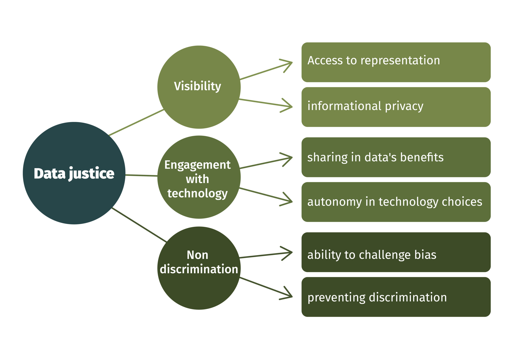

Pillars of Data Justice
(In)visibility
The pillar of (in)visibility comprises of two levels: safeguarding privacy claims and guaranteeing necessary and appropriate forms of representation. Visibility refers to the ways in which individuals and groups are made visible or invisible through the collection, use, and dissemination of digital data. This involves questions of who is being seen, who is being heard, and who is being excluded or marginalized in the production and consumption of data. In many cases, historically marginalized communities have been rendered invisible or excluded from data collection efforts, leading to gaps in knowledge and understanding about their experiences and needs. On the other hand, some groups may be overrepresented or stigmatized in data, leading to unfair treatment or negative stereotypes.
(Dis)engagement with technology involves having control over the choice of technology and ensuring that the benefits of data collection and processing are shared fairly and appropriately. Autonomy in technology choices is important in data justice because it empowers individuals and communities to take control of their digital lives and to ensure that their personal data is used in ways that align with their values and interests. Data collection and processing can have significant benefits for individuals and communities, including better healthcare outcomes, more targeted social services, and improved public safety. However, these benefits may not be shared equally among all members of society, particularly those who are historically underrepresented or marginalized.
(Dis)engagement with Technology

Non-Discrimination
The idea of non-discrimination or anti-discrimination involves practical methods to recognize unfair biases and the ability to prevent discriminatory practices. Non-discrimination in the context of data justice refers to the principle that data should not be used in ways that perpetuate or exacerbate social inequalities or discriminate against individuals or groups based on factors such as race, gender, ethnicity, sexuality, or disability. It recognizes that data can be a powerful tool for identifying patterns of discrimination and promoting greater social justice, but it can also be used in ways that reinforce existing power imbalances and social stratification.